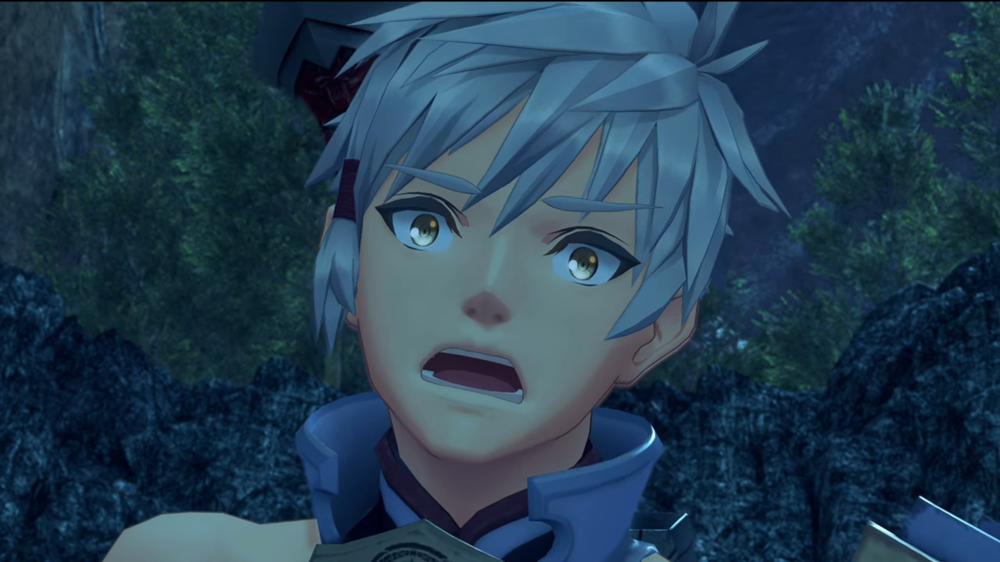
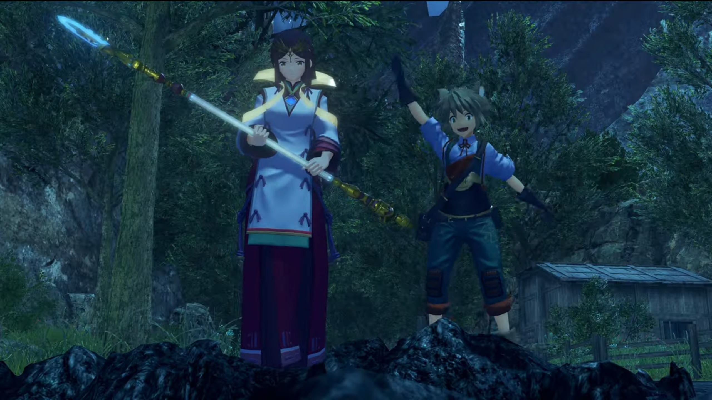
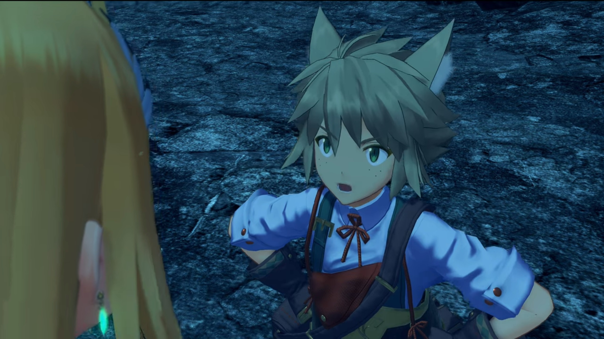
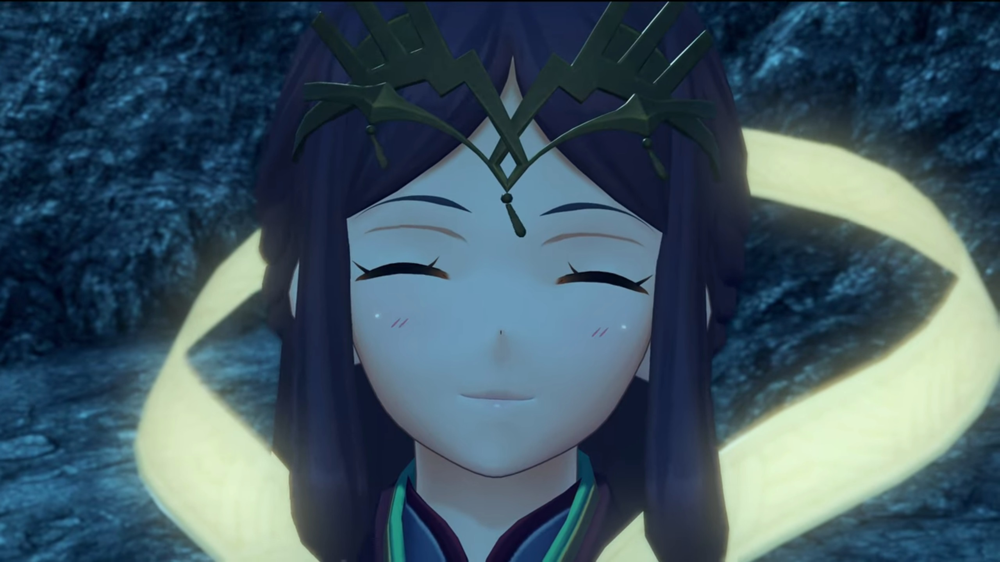
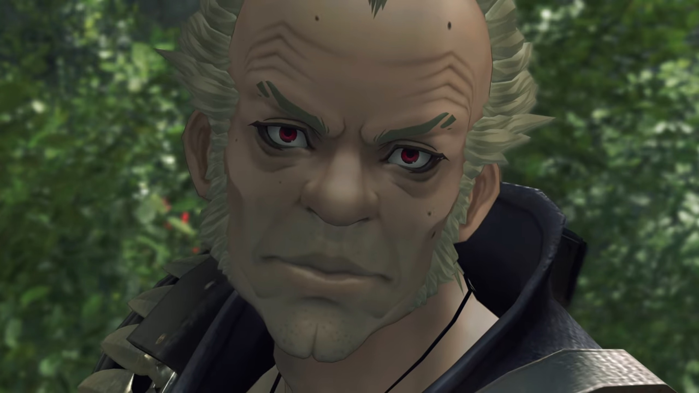
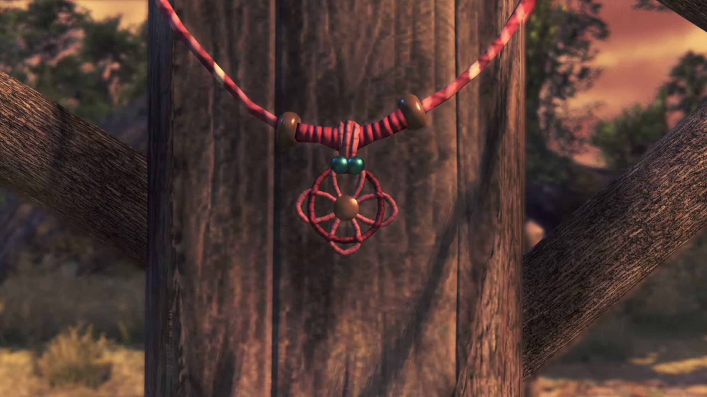
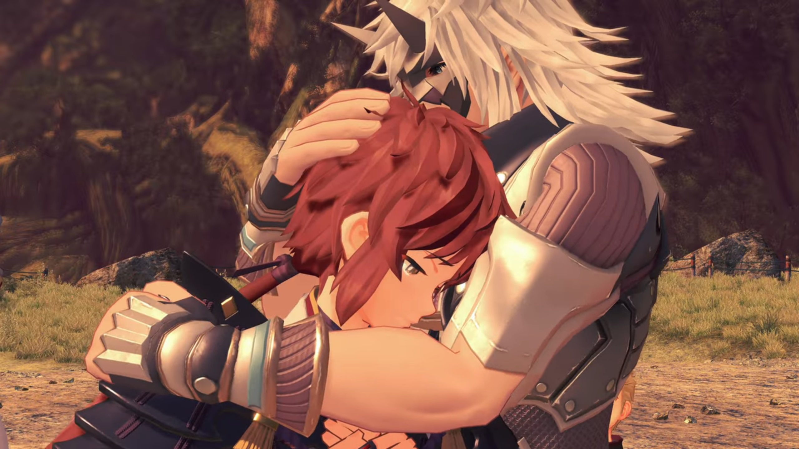

The Other Aegis, Where's Mother?
"CHAAAAYRKKK!!!" Lora whipped at the guy, whom, wielding a non-Blade sword, sliced at the tip, let it rolled around, and pulled it tight. It became a tug of war.
Jin came up from behind, jumped into the air, slashing at the guy; the blonde girl the same. Halfway, she shockingly watched Jin threw his sword that plunged and stuck into the soil beside Lora while raising a shield, coming at her. Mid-air, there's nothing else she could do.
"HYARRRGH!!!" She released her whip and took the sword, launching herself at him. After one slash, she released the sword, which Jin, whom just landed beside her, took it, and made another slash. The girl came a round late, made Jin her opponent, but clearly annoyed,
"The hell ARE these two?! They're just a Driver and Blade, where's this strength coming from?"
"Well, he IS- the Paragon of Torna."
"Hrh... I've had enough." Jin aimed his palm and prepared the icicles.
Lora, whom felt these guys were just enjoying the fight rather than really wanted to catch them so far, was caught in surprise, trying to stop him from escalating the situation, "What? No! There's no need for you to-"
She launched herself at him, but it's too late, and he wasn't listening. Ice spears materialized and launched in hundreds at the guy. The girl, seeing the situation dire, the turquoise crystal attached to the front of the headband she wore on her forehead started shining emerald brightly, and in a moment, a particle beam struck down from behind the clouds, creating a giant field dome that swallowed his spears.
"Whoa..." Lora was even more surprised. The girl moved herself in front of the guy, shielding him. The guy was frozen for a moment, before he sheathed his sword on his back and exclaimed,
"YOU!!!"
Jin backed down, wondered why would this weird guy started walking towards them fast, prepared to launch another attack if he did anything suspicious. Lora eyes opened wide, mouth gaped, perplexed, "W-what?"
He walked closer towards them, all the while holding his right arm straight at them, exclaimed, "Incredible! You... Both of you!" He opened his arms wide, as if to embrace.
"Huh?" Lora was perplexed beyond saving. She looked to Jin, trying to gauge the situation, trying to see if he understood what's going on, but the look on his face betrayed him -- equally confused. The blonde girl too sheathed her weapon and crossed her arms and shook her head. This isn't the first time the guy did this kind of thing, and she just got tired of it.
"That last attack? The force behind it was absurd! I'm amazed."
"Oh, ah, really...? Well, that's just..." She blushed. "Ahahaha..."
"Oh, and... Passing the weapon...? What a CONCEPT!!! How did you ever come up with THAT idea?"
Her face grew redder, eyes widened, "Oh, well..." (The guy waited in patience, with a smile on his face, for her answer. Lora looked to the side, blinked, and said) "We were... broke."
"Ahhh???" He bent his head closer, trying to make sure he just heard what he just heard.
Lora, feeling challenged, raised her chest and put her hands on her waist, put up an annoyed face and talked in an annoyed tone, "We couldn't afford meals, let alone another sword. And so we made do."
His eyes wide opened, mouth gaped wide, muscles frozen in place. The girl the same.

Jin couldn't stop her from revealing their financial conditions, gritted his teeth and facepalmed himself, shaking his head.
"AHAHAHAHAHAHAH!!!! You're kidding?!"
"Hmph!" Lora crossed her arm, even more annoyed at him.
"Oh, man... You guys are the best. I HAVEN'T LAUGHED this hard in ages."
"Huh?" What do you even mean?
"I really, REALLY like you two."
"Urrrrr...."
Meanwhile, outside, Mikhail watched as a boy wearing gray (rags???) with gray-brown hair and tanned skin, accompanied by a girl wearing white robes and big red long trousers, dragging along long dark-brown hair that wavered as she ran, holding on to a short staff with both hands, dashing into the scene. The boy shouted, "Master Addam! SIRRRRRRR!"

Addam and the girl looked behind, the boy, standing at the edge of the pit, waving furiously at Addam and the blonde girl. Addam called out, "Milton!"
They quickly descended into the pit. Lora's eyes widened as she saw her. Finally here! Milton, meanwhile, jumped and hugged Addam. "Ohhhhh, thank goodness you're all right! Master Addam, are you hurt at all?"
"Master... Addam...?" Lora gaped. "You can't be THE Addam Origo?!"
Jin shared what he knew, "The lord of Aletta... And fourth in line to the throne of Torna."
The blonde girl gingerly walked closer, said in slightly annoyed voice, "Ohhh, come on, Milton. I've been with him the whole time. You really think these two would cause any harm?" She bent forward and looked at him wide-eyes.
He bent forward with arms on his waist, argued back, "You've been using your dumb Artifice again, haven't you?" Milton had some freckles on his cheeks, emerald-green irises, and long cat-like ears. A three-leaf-clover-knot attached to his waiter-like shirt{{footnote: It really looked like rags earlier, so one'll not change the description.}}, which had green straps pulling up his trousers wrapped around his shoulder, and he carried a bag with a strap flung around his left shoulder.

"DUMB?!!!"
"So yeah, sure, nothing to worry about, right?"
She stomped her foot; Addam put his arm in between her and Milton, to prevent the incited Mythra from escalating the argument. She stayed annoyed, but stopped all right. Addam went down with a smiling face, asked, "Milton. Who's this, then?"
"Ah, this is Haze. She rescued me from the jaws of some nasty mosters."
Haze, with a face 80% similar to Lora, though with a different hairstyle, and wore a headband of indescribable shape, smiled back at him. The floating strip that stretched around the back of her neck glow in the dark. She had a diamond core crystal on her chest, which she revealed. She wore a priestess robe that had a wide V in the middle that allowed the core crystal to be displayed.

"Well, I'd better give her my thanks."
"Haze!" Lora called.
"Oh? Was she- with you?" Addam wondered.
Haze walked closer and apologized, bowed to Lora, "I'm sorry to keep you waiting, my lady."
Camping on the outskirt of the destroyed village for the night, someone hung a pot on top of the campfire while they sat on the rocks arranged in a circle, sharing stories.
"I see... So that's when... What a sad, sad tale, Lora... Nghuh nghuh..." Tears started overflowing Addam's eyes. He covered it with his palm.
Milton sighed, "Ohhhh, here we go again..." He got up and offered him his handkerchief. He took it and covered his eyes with it.
While Mikhail was watching, wondering why he would cry so emotionally, someone told him, "Don't let it get cold, now." His attention diverted, seeing Milton passing him a bowl. He took it from him.
As his tears dried, he asked, "So then, how come you've enlisted with a band of mercenaries?"
"I guess I like the freedom." replied Lora. "This way I'm not tied down, so I can help out... with causes I really believe in, you know? Going's tough everywhere you look these days, right? I can't ignore it, can I?"
"I understand."
The girl commented, "Fat load of good that'll do- in the long run. The world keeps turning anyway."
Addam was looking at her while she closed her eyes considering the logic, then Jin rebutted, "You might think that." (They looked at him, wondered what he got to say.) "But mercenaries and statesmen- each have their own views and ways to effect change. It's not in vain."
She lightly commented, "Huh. A Blade siding with humans... You don't see that every day."
"I think it's Blades like you- that are rare."
She seemed to take it as a praise, folded her arms and pushed her nose high, "Well, duh! You do know- what I am, right?"
He emotionlessly explained his words, "Lacking in compassion."
"HUH?!!!" Her head snapped into position, her eyes widened.
He folded his arm, ignoring her eyes that wanted to tear him down, "Blades like you- really are a rare sight. That may be for the best."
"Pfft URGHHH..." She tsunderely looked to the side, refused to argue with him.
Lora watched them finished their conversation, turned to Addam, "So about Jin... I suppose you have to take him away from me." Jin looked at her.
Addam sternly answered, "I could try to slay you right here..." Jin turned his head to look at him emotionlessly and calmly.
"But?" She looked to the ground, wishing what's ahead won't be worse.
"BUT- my mission is to stop the Aegis's destruction... To subdue Malos. Not to seek out lost trinkets. Who cares about Paragons anyway?"
"Huh?" That came as a surprise. Her depressed mood lessened.
He suggested, "How about... you two join up, lend us your strength? You're incredibly powerful. There's loads I want to pick up from you... like that trick from before! Let's see..." (His brain worked hard to come up with a solution) "We'll say I found the Paragon on my journey, and decided to entrust him to you. To help with Malos. Well? Sound plausible?"
Her eyes widened, her mood uplifted, "That's just..." He gave her a smile. The girl just shook her head; always hearing this kind of stuffs every day.
The campfire, shining bright and high without the pot hovering over it, couldn't prevent them from feeling the cold seeping in at night. Addam and his Blade went somewhere else, leaving Lora sitting next to Jin, happily conversing, while Mikhail quietly resided in his inner thoughts even when he sat next to Milton, whom put his hand on the back of his head and looked at him sit-sleeping (ahem, meditating), while Haze sat closer to those two and observed their reactions. Perhaps he sensed their fiery gaze locked on him, opened his eyes and wonder what the spark were they wanting from him.
Outside the fence, Addam and the girl watched them. The girl sniped, "How dare he speak to me like that? He thinks he knows me!"
"'Coarse' is the word."
The girl agreed. "Yeah! He is!"
He turned to look at her, corrected her, "I meant you."
"ME?!!!"
"He meant you're unpolished. After you return to your core, you lose your memories. However, as you gain experience with people, gradually the nature of a Blade... rather, their feelings... they change and grow. You become more- and more human." (She's thinking hard; we don't know what's going on in her mind.) "But you- purposely keep yourself apart."
"Oh, so now it's my fault?!"
"Nooo, not at all!" (Her eyes widened.) "I respect that part of you."
She blushed and looked away, don't know how to reply except to keep up with her tsundere.
Meanwhile, at the camp, Lora saw that Jin was bending forward with his elbow on his knees, closing his eyes as if sit-sleeping, asked, "Hey, are you... angry?" (He looked at her for further clarification.) "About this whole Malos thing..."
He shook his head. "I'm not. Whatever happens, I'll protect you. Be sure of it. We cannot simply ignore- what's happening- in the world. But..." He looked back at the floor.
"Buttttt- what?"
He turned to her, "Please say you'll be careful."
"Hmph! I will." And that's a promise.
The morning bird rose and ate the mating worms. The sun shone through the clear sky, casted its warmth on the nearby hills and mountainous structures. Addam, the girl, and Milton gathered around for a refreshing morning chat. The irregular wind blew past swayed the piece of loose cloth that stretches behind her back.
"Erm, Your Highness?" Lora approached and disturbed.
"Just Addam is fine. What is it?" Her group had gathered around beside her.
"The going after Malos thing... Could it wait a few days?"
"Ooooh? Is there something you need to do first?"
"I... Well, yes."
He folded his arm, waiting for an explanation. Haze took over to explain, "You see... Lady Lora seeks the whereabouts of her mother. Unfortunately, she has her mercenary duties to perform. Therefore, I often go out and conduct these searches myself."
"I see... Then, you've found her?"
"Y-yes." She turned to Lora, "With all that happened yesterday, I did not have the opportunity to say{{footnote: What's with all the nighttime???}}... M-my lady, your mother is currently residing in a small hamlet called Torigoth."
"Torigoth." She repeated the word, as if she held on to hope itself. Finally, after years of waiting, she finally heard about her.
"That's on the edge of Gormott." Addam had heard of the whereabouts before. Both turned their attention to him. "Ardainian and Coeian forces clash out there frequently. It's very dangerous."{{footnote: Unsure though, wasn't Coeia capital being felled by the Praetorium already?}}
"Indeed." She who did the research agreed.
"Riiiiight, (he folded his arms) no time to waste. Let us head out there!"
That surprised Lora, "What?! But what about your mission?!"
He asked instead, "You don't want- to see your mother?"
Her eyes widened a little, "Of... Of course, but..."
He gave her no chance to rebut, "Then LET'S GO!!! Malos hasn't hit that part of the world yet. It's as... good a place as any to look."
"You're hoping we might... find him there?"
"Exactly."
"That sounds too easy..."
He put his hand on his waist, concluded their mission, "We go to the village of Torigoth- to find Malos. And- you go to Torigoth to find your mother! Everybody wins!"
"And once I've found my mother, I join up with you?"
His smile broadened, "Hmmm! That's the general idea. I'll send my people to notify your mercenary friends. And perhaps we could find a place for your mother in the capital? It should be safe there."
Her eyes widened in disbelief, questioned out loud, with clearly a tone of friendliness, "Is this normal princely behavior?"
The girl gave them a half-closed-eyelid look, "Mmm you think this is bad, just stick around for a bit."
Milton argued back, "Nobody's, like, making you come along, you know?"
She folded her arm, "Un-fortunately (with a thick sigh), a Driver and Blade are one in body- and soul."
"As if you don't do whatever you feel like anyway..." And they stared at each other, locked in an eye-staring contest where whoever backs down first lose. Addam smiled at their lovely interactions; he really thought she'd changed quite a lot ever since he first resonated with her. And that he felt glad.
He turned his attention back to Lora, "I know this is all very sudden. Still, we don't know where we'll run into Malos next. It makes sense to stick together... as much as we can."
Unbeknownst to them, hidden behind the tall grass the overgrew the side of the path, was a low-profiled guy with short gray hair and slightly tanned skin with some paintings on his eyes to thicken his eyebrow, and deep sacs below his eyes, plus some moles randomly placed on his face. His crimson iris locked on to one of the figure in the group, recognized, "Isn't that...?"

He remembered, a long time ago, when the young girl touched the crystal and he materialized, kneeling before her while he regained consciousness, he, wearing no shirt, carried a big beer belly, ignored him for the moment, taking a knife and went after the little girl awashed with fear, and the guy he ignored sliced and stabbed on him before he could land his hand on her.
He wore some leather jacket so small it left most of his body parts naked, and a blue-purple strap strapped over his chest. His bellow was forever wrapped with thick bandage, as thin as ever. And his right arm had been replaced by a mechanical one. A necklace with 4 animal fangs he wore. "No mistakin' it. That's the Blade... And that little brat, too!"
Even though she had grew up to be different, for 17 years, he had lived in agony ever since. Oh, he thought, if he had not let the little girl born into this world, how rich would he be now from selling his core crystal. But because she resonated with the crystal, he couldn't sell it and make them, no, him, rich, he now have to worked day and night in this current situation for meager income{{footnote: At least, he considered it meagre compared to selling the Paragon.}}
He turned around and looked at a common Blade{{footnote: Common Blade, unlike rare Blades, are Blades that had nothing that resembles a human or an animal, mostly looked like humanoid robots or animistic robots in appearance.}} that stood quietly behind him. The Blade immediately knew what he wanted, pushed his arms and summoned some ether, which materialized a hologram of a person's head and neck. Communications established, the guy reported, "Hey, it's Bluefist."
Some communications exchanged before he reported, "Yeahhhhh, the whooooole village{{footnote: He didn't shout it out, only emphasized.}} was wiped out. Found myself some great Core Crystals, though." He looked at the sac laid on the floor filled with darkened inactive Core Crystals.{{footnote: Inactive core crystals can't be resonated yet. They'll regain their activity after some time.}}
"And... I found somethin' else, too. Somethin' reaaaaal interesting."
He watched as Jin took out his mask from his pocket and put it on his face, as if that prevent others from recognizing him; but not he. They were leaving the track, leaving the destroyed village. He turned to the hologram, said, "Uh-huh. Gimme some time to take care of this, OK?... I'll be in touch."
The hologram dissipated. He glanced at their shadows, exclaimed, "Hah! Fate's a funny thing. Never thought I'd get to take back that Paragon- what I stole in the first place..." The last sentence he speak through his teeth gritted, his tongue twisted.
The ship, a cabin hung below a fish Titan, parked at the edge of their journey on this current Titan, took off for the sky.
Some time passed before they arrived at a meadow-covered port on another Titan. The land stuck out so little you could safely jumped off the ledge and dived below the clouds; or if you're afraid, there were some roots that you could climb down along.
A raindeer-shaped turquoise Titan, its head stuck high, with scales on its neck, its roots-like back floated very near the cloud sea's surface. The other parts of its body submerged below the clouds. Where there's a break between the land, water falls off. Some huge trees grow on the back of the meadow, scarcely filled with small fig trees puny to the giant Yggdrasil-like ones. This, is Gormott.
The group waited for Lora, whom stood on the path leading to a burnt-down village. Only traces of its wooden pillars remained. Lands were abandoned. Trees within the perimeter were devoid of leaves, probably suffocated to death. Its ground barren. She took a few steps closer. It was like two separate worlds.
"Oh no..."
"Here, too?" Addam wondered. "Gormott's an attractive target, but this?" He took some time to pay his deed to the fallen. "Whoever did this... clearly had no compassion or respect- for the people they killed."
The girl wasn't too compassionate either, brushed it off, "Whether it was Malos, or someone else. Either way... clearly, they're allllll toast."
"Mythra!"
"Uphrhhh???" Did she spoke something wrong again? Clearly she didn't realize, but when she saw the figure immersed in her sadness, worried about her loss, she somewhat understood why she shouldn't have said that.
Jin was worried about her state, called out, "Lora..."
"It's... It's OK. Mother... could have run away somewhere safe..." She tried to persuade herself, although deep down in her gut, she felt the probability dwindling, but she yet don't want to believe, not until she receive the exact news.
Entering the village and exiting from the other side, the group found some wooden stick used as primitive tombstone, stuck into small dunes aggregated in the cleared land. Addam led the way, commented, "Look. Fresh graves over here..."
They scanned left and right. Haze's eyes fixated on a man whom laid dead between the graves. "This kind soul must have dug them all..."
Mythra focused on the guy, tears rolling down her cheeks as her eyes fixated on the figure. Addam seem to caught her shoulder shuddering, looked towards her and asked, "What's wrong?"
"Should... Should we maybe bury him, too?"
"Huh!" His eyebrow raised; the girl that depreciate people, speaking openly without an act of compassion, have no feel for what others feel, started to feel something herself? That was another step forward that she learned the art of compassion. His smile broadened more and more, decided to go with her, "Mm. Yes, let's."
Meanwhile, Lora's eyes caught something; caught in a surprise, she ran toward one of the wooden stick and looked at it. She looked at it clearly, the texture, the shape, the color; her eyes widened. A necklace of red string, some parts of the string worn out that you can see the white underneath. Two beads tightened the secondary layer of string wrapped around its middle parts. Directly in between was a 4-leaves clover connected by a circular button in the middle, like a cliché flower, and another circular ring smaller than the clover's circumference placed in front of it, hung around the middle in between the two beads.

She carefully took it off the post and examined it closely, trembled as she feels the texture she long reminisced, last felt when she was way younger.
"This..."
The young Lora happily wrapped the strings around the final part of the necklace. After tightening it and making sure it does not fall off, she took it up, viewed it against the wooden walls, and smiled. A pendant for her mother!
"I made this for her myself... She... kept it, all this time..."
She took it with both hands and placed it near her heart, tears overflowing the tip of her eyes. She closed her eyes, trying to feel her warmth that lingered via the necklace through all those years of memories and the years she wasn't with her. Jin sighed. Haze put her left fist on her heart. Jin walked forward and put one arm on her head, wrapped around her shoulder with another, and gently bring her head close to his chest. He felt his chest getting wetter and wetter, and closed his eyes, sharing her moments while she took her time. The rest gave her the time and space she needed.

Perhaps the tranquility and peacefulness of this barren, abandoned land was where she hope to rest.